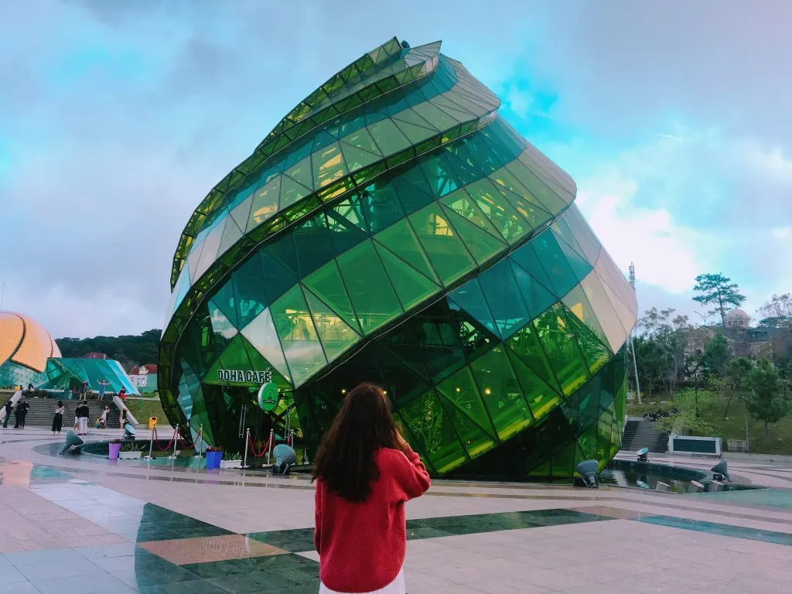
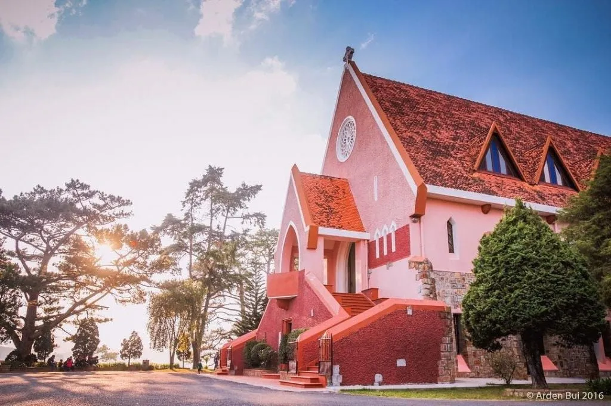

Đà Lạt Có Gì - Top Địa Điểm Chill Tại Đà Lạt

Mục lục bài viết
1. Giới thiệu về Đà Lạt

Đà Lạt – “Thành phố ngàn hoa”, nổi tiếng với khí hậu mát mẻ quanh năm, cảnh quan thiên nhiên tuyệt đẹp, là điểm đến lý tưởng cho những ai muốn tìm kiếm một chút bình yên. Đà Lạt có gì? Hãy cùng khám phá những địa điểm chill nhất mà bạn không thể bỏ lỡ khi đến với nơi đây!
2. Top Địa điểm chill tại Đà Lạt
2.1. Hồ Tuyền Lâm

Hồ Tuyền Lâm được xem là “tiểu đồng bằng” giữa lòng Đà Lạt, nơi bạn có thể tham gia các hoạt động như chèo thuyền kayak, cắm trại bên hồ hay đơn giản là ngồi nhở nhắm nhí ly cà phê bên hồ.
2.2. Cánh đồng cối xay gió Langbiang
Ngắm hoàng hôn trên những cánh đồng cối xay gió gợi nhớ hình ảnh đồng nắng châu Âu. Bạn có thể lều trữ qua đêm tại đây và tận hưởng không gian tĩnh lặng, thư giãn.
2.3. Tiệm cà phê Mê Linh
Cách trung tâm thành phố khoảng 20km, Mê Linh Coffee Garden mang đến khung cảnh tuyệt đẹp với view trên cao bao quát thung lũng cà phê xanh mướt. Hãy thưởng thức một ly cà phê chồn lừng danh tại đây.
2.4. Nhà thờ Domain De Marie

Nhà thờ Domain De Marie không chỉ là địa điểm tâm linh mà còn hút khách với lối kiến trúc Pháp độc đáo, sắc hồng của tường nhà thờ rất “chill” dưới ánh chiều hoàng hôn.
2.5. Tiệm Nướng & Chill Xóm Lèo

Nếu muốn vừa thưởng thức món nướng ngon vừa chill giữa núi rừng Đà Lạt, Tiệm Nướng & Chill Xóm Lèo là lựa chọn lý tưởng. Quán có view tàu hoàng hôn, nhà lồng lung linh về đêm, tạo không gian lãng mạn, thư giãn.
Nổi bật với bò tảng đậm đà, ba chỉ bò kim châm, ba chỉ bò tiêu cay nồng, ốc nhồi thịt thơm ngon, nơi đây mang đến trải nghiệm ẩm thực tuyệt vời bên bếp lửa hồng trong cái lạnh Đà Lạt.
Đặc biệt, quán còn có trải nghiệm “test nhân phẩm” săn tàu đêm—nếu may mắn, bạn sẽ bắt gặp khoảnh khắc tàu chạy ngang trong ánh đèn vàng huyền ảo, một kỷ niệm đáng nhớ!
📌 Inbox: https://m.me/nuongxomleo
📌 Địa chỉ: 113 Huỳnh Tấn Phát, Phường 11, Đà Lạt, Lâm Đồng 67000
📌 Google Map: https://maps.app.goo.gl/W4ygihLS8LQ1YiSK8
📌 Hotline:
076.45.27.336
08.99.42.84.34
0902.91.22.40
3. Kinh nghiệm du lịch Đà Lạt
Di chuyển: Bạn có thể đi Đà Lạt bằng xe khách, máy bay hoặc tự lái xe máy nếu muốn trải nghiệm cung đường đồi núi.
Lựa chọn khách sạn, homestay: Có nhiều homestay với view cực chill như The Kupid, Lá Nhà, Le Bleu…
Ăn uống: Nhất định phải thử bầu nóng, lẩu gà lá é, bánh tráng nướng. Đặc biệt, nếu muốn thưởng thức lẩu cá tầm và lẩu gà lá é chuẩn vị Đà Lạt, hãy ghé ngay Tiệm Nướng & Chill Xóm Lèo để tận hưởng hương vị thơm ngon giữa không gian ấm cúng, chill hết nấc!
Vậy Đà Lạt có gì? Nơi đây có vô số điểm đến lý tưởng dành cho những ai yêu thích sự bình yên, lãng mạn. Nếu bạn muốn tận hưởng không khí se lạnh và khám phá ẩm thực đặc trưng, Tiệm Nướng & Chill Xóm Lèo là lựa chọn hoàn hảo với lẩu cá tầm, lẩu gà lá é và nhiều món nướng hấp dẫn. Ngồi bên bếp lửa hồng, thưởng thức món ngon giữa khung cảnh núi rừng chắc chắn sẽ là trải nghiệm đáng nhớ. Hãy lên kế hoạch ngay và tận hưởng một chuyến đi đầy cảm xúc!